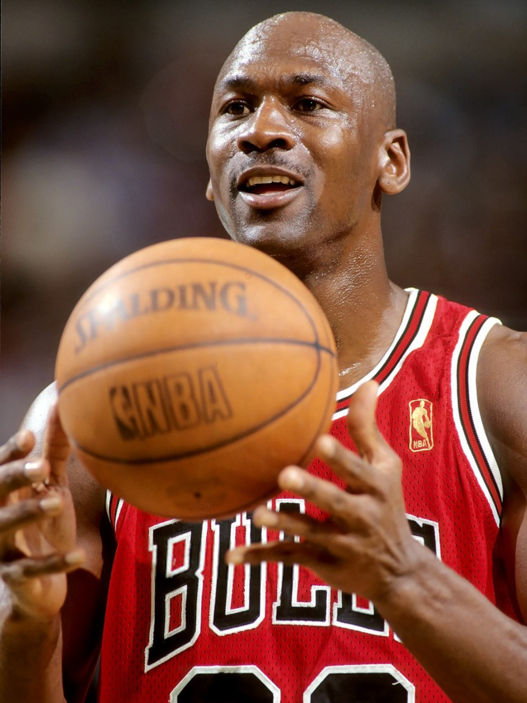
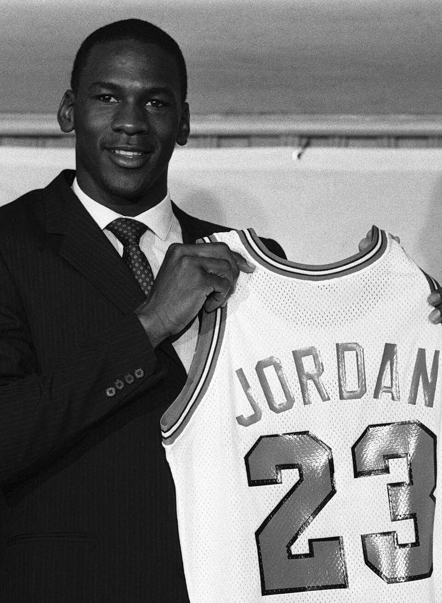
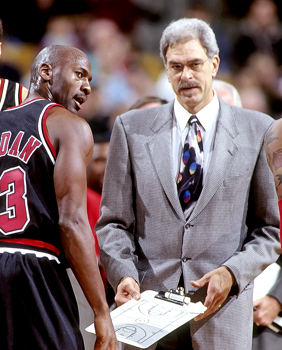
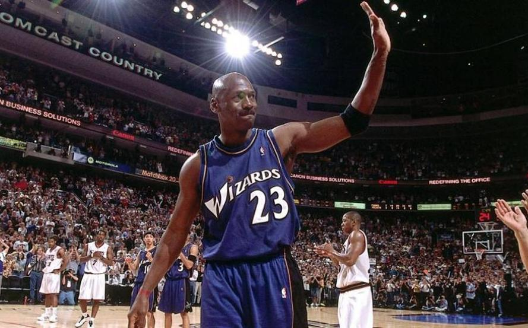

Michael Jordan es considerado uno de los mejores jugadores de baloncesto de todos los tiempos. Es conocido por sus seis campeonatos con los Chicago Bulls y por la gran influencia que tuvo en el deporte.
Michael Jeffrey Jordan nació el 17 de febrero de 1963 en Brooklyn, Nueva York. Estudió en la Universidad de Carolina del Norte y comenzó su carrera profesional en la NBA en 1984 con los Chicago Bulls.
Durante su carrera destacó por su talento, su capacidad para anotar puntos y su mentalidad competitiva. Después de ganar seis campeonatos con Chicago, regresó a jugar con los Washington Wizards.

En 1984, Michael Jordan fue seleccionado por los Chicago Bulls en el Draft de la NBA. Su llegada marcó el inicio de una carrera que cambiaría la historia del baloncesto.

Phil Jackson fue el entrenador de los Chicago Bulls durante sus seis campeonatos de la NBA. Jordan y Jackson formaron parte de una de las etapas más exitosas en la historia del equipo.

Después de retirarse por segunda vez en 1999, Michael Jordan decidió regresar a la NBA en 2001. Esta vez jugó para los Washington Wizards, equipo con el que terminó su carrera en 2003.
Elegí este momento porque fue el comienzo de su carrera profesional y de todo lo que consiguió después en la NBA.
Me gusta esta etapa porque Jordan consiguió sus seis campeonatos y demostró lo importante que es trabajar en equipo para ganar.
Me parece interesante porque, aunque ya se había retirado, decidió regresar a jugar porque todavía tenía pasión por el baloncesto.